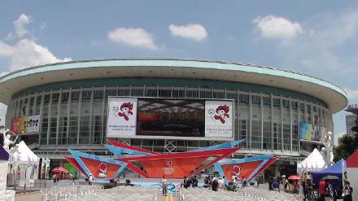
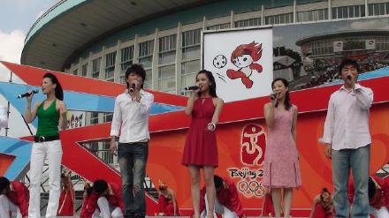
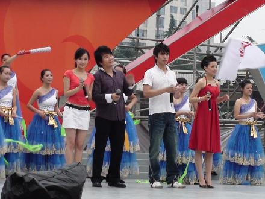
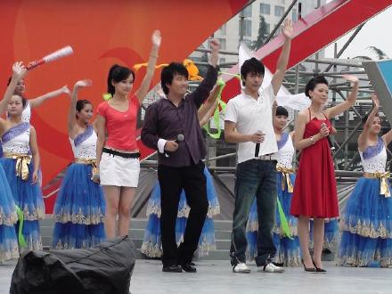

先说一句比较官方的话,呵呵,很荣幸参加为奥运加油的系列演出!那么热的天,顶着大太阳唱歌,总是在唱到一半或是还没开始前就下起了大暴雨,台上的淋一点雨,最多也就是感冒吃药在家休息.辛苦的是那些为了这场演出忙前忙后忙了好久的工作人员,导演...还有貌似很贵的音响器材什么的...
彩排的时候还是大太阳,还没化妆光走个台就晒的浑身湿透,我在想,我们在台上几分钟唱完就可以进休息室吹空调,可台下那些观众怎么办呀,他们要坐整整1个小时,一星期前就为他们准备好的座位已经被晒得滚烫滚烫,还有那些尊敬的领导们,他们入坐的那一刻一定会挺后悔的吧!结果还没等开始,一个霹雳闪电就把所有人都吓坏了,工作人员赶紧把那些设备什么的保护起来,台下的观众跑的跑,逃的逃,剩下的全都躲进了演员休息室,接着万体管上方就下起了大暴雨...那天的演出取消了...
最近的几天局部地区都会有阵雷雨,有一场好险是刚演完就下了.昨天是奥运演出最后第二场,是我感觉最好的一场,站在舞台上唱最后一首点燃激情传递梦想的时候,全场观众都沸腾了,仿佛自己站在开幕现场那样的骄傲,真的好羡慕那些能在开幕式唱歌的艺人们...昨天气象局的朋友和我说会下雨,结果没下,还好没下,真是谢天谢地.演出非常圆满.22号也就是后天是最后一场演出,千万不要下雨啊....



